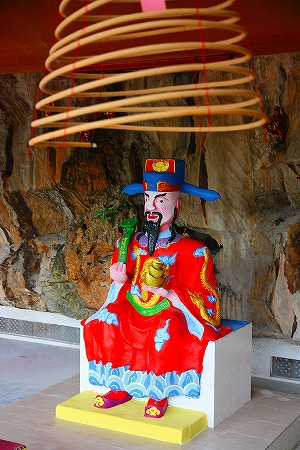

馬来西亜珍寺大行進、次なる修行の地はペラ州の州都、
イポーである。
イポーはマレーシア北西部にあるマレーシア第三の都市で、この国を代表する地下資源である
錫の採掘で栄えた街だ。
華人が多く住み、古い建物が並ぶ旧市街などはいかにも東南アジアのチャイナタウン、といった風情。
そんな錫の街も現在は工業化から取り残され、マレーシア経済の屋台骨を支えていたのは徐々に昔話となりつつあるようだ。
そんなイポーの街の郊外には数多くの岩山と洞窟がある。
洞窟があれば宗教的な聖域に仕立て上げるのは古今東西世の常。
ここイポーの洞窟群もご多分に漏れず、キッチリ洞窟寺院になっている。
と、いう訳で最初に訪れたのは
霊仙岩という華人の道教寺院。
ご覧のとおりギッチギチのチャイニーズテイストが炸裂している。しかもその色使いといったら！
入り口に立つ門番のコンクリ像からして早くもこの寺のスペシャルなクオリティが伺えるじゃないか。
境内に一歩足を踏み入れると、色彩の洪水に巻き込まれる。
しかもあちこちに珍妙なコンクリ像が点在している。楽しい、楽しいぞっ！
この12色の絵の具を全部ぶちまけたような野放図な色の使い方、私は嫌いじゃないよ。
いや、むしろ好みだ。いやいや、大好きです！
ではではファンキーな神仏軍団をじっくりと鑑賞してみようか。
関羽。道教では財神としてあがめられている。「義」の一言が泣かせますね。
幼稚園児が酒飲んで描いたような素敵な動物にまたがったカミサマは狛犬のように左右対になって置かれていた。
西遊記。孫悟空は中国の道教系民間信仰では斉天大聖という神として扱われている。民衆の間では人気の神だ。
画像を見て気づいたのだが、後ろに大きな龍がいたんですね。あまりにもごちゃごちゃと色んなコンクリ像があったので完全に見落としてました。
さらに大きな観音サマまで。
今更指摘するまでもないが、コンクリの塑像としてはかなり微妙な出来栄え、と言わざるを得まい。
ただ、この手のコンクリ像、私は嫌いじゃない。
いやいや、大大好きです！
…さて、肝心の洞窟に入ってみよう。
間口が広く奥行きの浅い洞窟がそのまま本堂になっている。
洞窟の天井部は長年の線香の煙で赤黒くくすんでいる。それは長きに渡って信仰されてきたこの寺の歴史そのものといえよう。
洞窟を出て周囲を伺う。
やっぱり気になるのはこのお方。
ちょっとミッツ入ってる観音サマ。
高さは6ｍほどか。
観音サマの先には塀があり、その先にも何やら愉快なカミサマがいそうな感じ。
門番の狛犬…
お隣には月下老人。見た目はアレだが、縁結びの神様だ。
で、塀の丸い穴を潜ると檻の中に弥勒サマが座っていた。
日本では布袋さんという扱いだが、華人にとっては弥勒サマなのだ。
弥勒サマの前にある金色の器が賽銭箱になっており、そこにコインが入れば願いが叶い、外れたらもう1回チャレンジすればいいじゃない的システム。
おかげで手前の池の中にはコインがたくさん沈んでました。
それにしても檻の中に仏像って…
こちらも布袋、もとい弥勒サマ。
佛縁、と刻まれた石碑（コンクリだけど）の傍らに立っている。
手に持っている赤い袋には結縁 八寶袋と書いてあり、これも賽銭箱になっている。
こちらも微妙な表情のコンクリ仏。
やけにケミカルな岩の「賜」と「福」の間に賽銭の投入口がある。
小銭たくさん用意しておかないとすぐなくなっちゃうぞ。
こちらは神医華陀という医学の神様。
三国志に登場する人物だが、今では医学の神様として信仰されている。
薬箱の一番上に賽銭の投入口が。
どの仏像もユニークを通り越して独自の路線を突き進んでいる。
これはマレーシア、いや東南アジア全体のコンクリ像全般に言えることなのかもしれないが、あまり写実性を追求しないようだ。
いや、むしろオモシロ方面に寄せていっているような気がしてならない。
ヘタと言ってしまえばそれまでなのだが、その一言で片付けられない「何か」を孕んでいるのだ。
で、一番奥には霊仙岩観音聖水甘露。実はこの壁の真裏に別の寺があるのだが、それは後で紹介します。
…なんだか野外でカラオケ大会やってるみたいな華々しさ。
歌うは美魔女系観音サマ、左右のダンサーは書き割りです。
お隣には仙人が。
傍らの「寿比南山不老松 福如東海長流水」とは長寿を祝う言葉だそうな。
さて、先ほどの本堂エリアに戻りましょうか。
境内の片隅にはブーゲンビリアの花の下、珍妙なコンクリ動物たちが点在している。
いかがであろうか、この珍獣動物園っぷり。
洞穴のような虚ろな目。
別の意味で百獣の王、なデッサンの狂いっぷり。

ついでにペガサスまで。どうやって鐙（アブミ）に足をかけたら良いのやら。
マレー人のちびっ子もコレに乗っていいのかどうか半信半疑で遊んでました…。
その近くには半分水没した人達がこれまた参拝者の小銭を待ち受けてます。
ひとつひとつに何らかのエピソードがあるのだろうが、意味不明。
実際、何のハナシか判ったところでこの半地下のドブみたいなところに賽銭を投げる参拝者は皆無だった。
檻に入った龍神も寂しげだ。
本堂の2階にあがってみる。コンクリでグロッタ風に仕上げてある。
美猴王とは孫悟空のこと。花果山とは孫悟空の生地のこと。
やけに孫悟空に肩入れしてるお寺だな。
この岩山自体を花果山に見立てているのだろうか。
まあ、そう見えなくもない、か。
黄金のカルテットは
四天王、だと思うんですけど、弱っちそう…。
羽箒を持ちご機嫌な様子のカミサマ…
おお。これはお酒大好き済公活仏だ！
後ろの仏塔もやっつけ感満点でいいですね〜。
天井からは多くの渦巻き型の線香が手向けられ弱々しい煙が立ち込めていた。

上から観音サマを見る。
何か大会でもあったのだろうか、次から次へと学生バスケットボール選手の団体さんが来ていた。

二階のテラスから眺めると隣のお寺が見える。次はお隣に行ってみようか。
隣のお寺へGO！
馬来西亜珍寺大行進
珍寺大道場 HOME